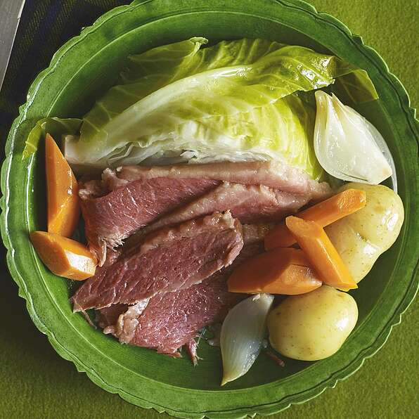

Corned Beef

Description
Mouth watering tender corned beef with corned beef flavored potatoes, cabbage, and carrots.
Ingredients
- 1 (5 1/2 pound) corned beef brisket
- 2 large onions
- 15 small white (Irish) potatoes
- 10 carrots, cut into 1 inch pieces
- 2 heads cabbage, cored and cut into wedges
Steps
- Rinse the beef brisket under cold water, and place in a large pot. Add enough water to cover the roast by 6 inches. Peel the onions, and place them in the pot with the roast. Bring to a boil, and cook for about 30 minutes at a rolling boil. Reduce heat to medium-low so that the water is at a gentle boil, cover, and cook for 3 1/2 hours.
- Remove the lid from the brisket. Remove onions, and cut into wedges. Return them to the pot. Add carrots to the pot, then place the cabbage over the roast. Place the potatoes on top of the cabbage. Place the lid back on the pot, and cook for another 30 minutes, until potatoes are tender. The potatoes should be immersed in the water by now, but if not, keep the lid on so they can steam.
- Remove the vegetables from the pot, and place in a separate serving bowl. Keep the corned beef in the pot until ready to slice and serve because it dries out quickly.